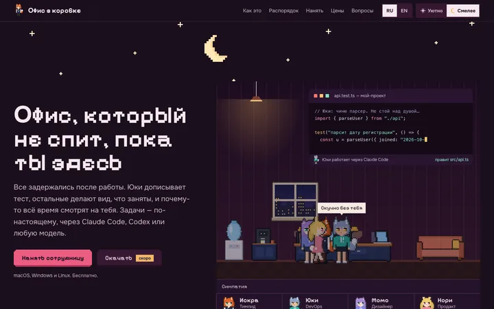
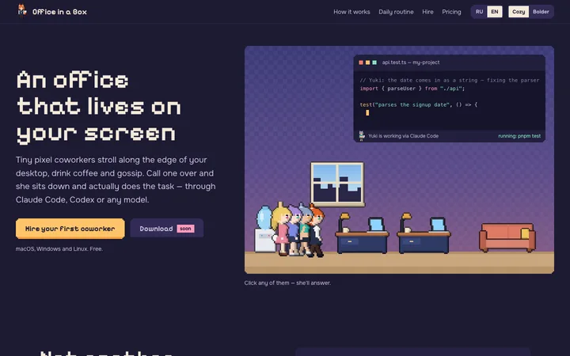
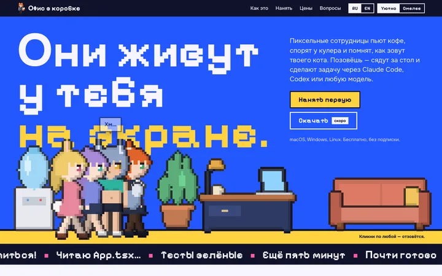
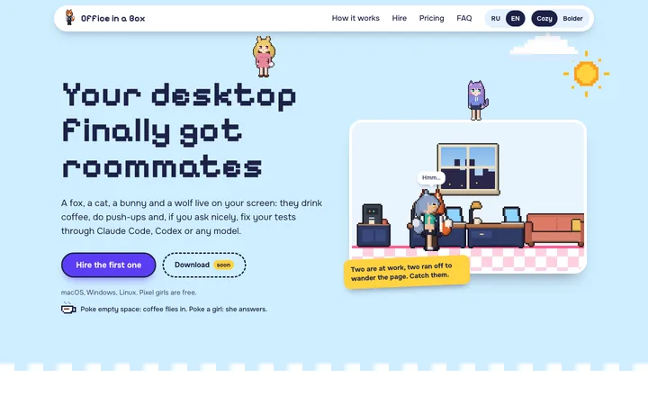
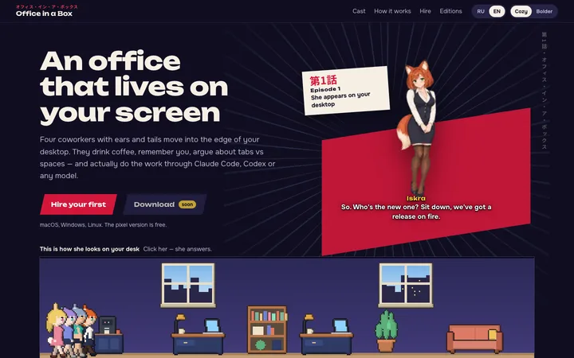
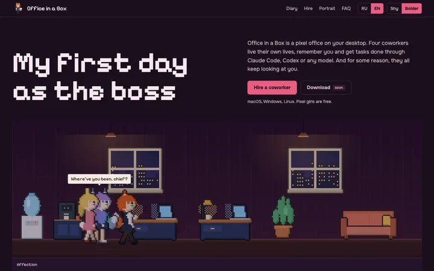

Шесть вариантов лендинга
Все живые: девочки ходят, реплики меняются, RU/EN и тон переключаются. Кликни, чтобы открыть.

F. День и ночь
A + C + E: «Уютно» — солнечный день, девочки гуляют по странице; «Смелее» — ночь, взгляд-курсор, румянец и ревность. Ползунок часов переключает сам.

A. Сумерки
Вечерний офис по твоим часам, редактор, где Юки правит тест, распорядок дня, отдел кадров.

B. Плакат
Смелее: кобальт, заголовок 150px, девочки ростом с буквы, бегущая строка из их реплик.

C. Стикерпак
Повеселее: солнечный день, девочки гуляют по всей странице, кофе по клику, конфетти при найме.

D. Эпизод 1
Поанимешнее: опенинг, карточки героинь с нарисованным артом, переписка как в визуальной новелле.

E. Первый день босса
Этти намёком: курсор — твой взгляд, девочки краснеют и ревнуют, шкала симпатии, «подари ей портрет».